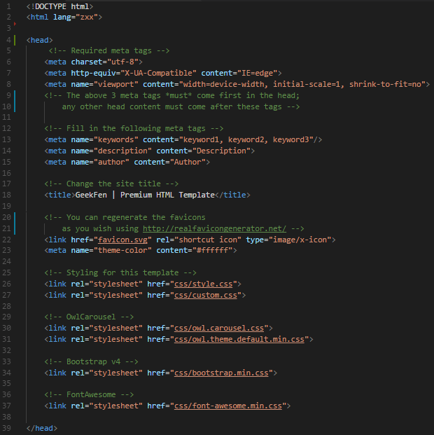
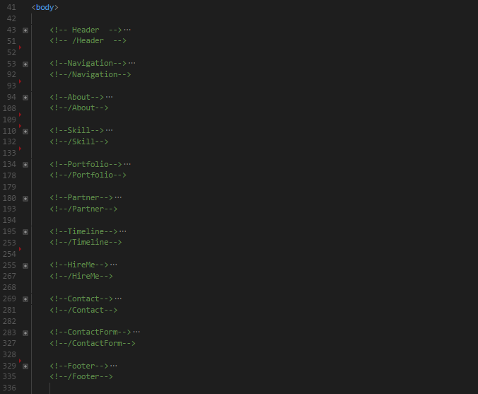
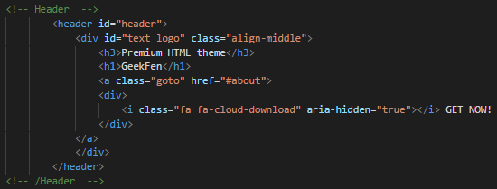
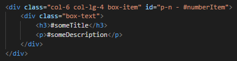
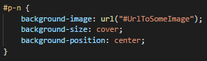
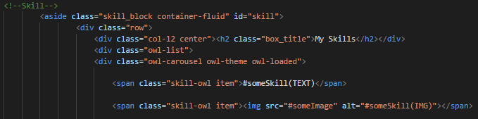

Created: 07/16/2017
By: Eugene Fenko
Email: softoverlordos@gmail.com
Thank you for purchasing my theme. If you have any questions that are beyond the scope of this help file, please feel free to email via my user page contact form here. Thanks so much!
This theme is a responsive layout with Bootstrap v4. The general template structure is the same throughout the template. Here is the general structure.
 If you would like to edit the color, font, or style of any elements in one of these columns, you would do the following:
For example, in custom.css:
 #text_logo {
color: #someColor;
}
If you find that your new style is not overriding, it is most likely because of a specificity problem. Scroll down in your CSS file and make sure that there isn't a similar style that has more weight.
I.E.
#text_logo h3 {
color: #someColor !important;
}
So, to ensure that your new styles are applied, make sure that they carry enough "weight" and that there isn't a style lower in the CSS file that is being applied after yours or use "!important".
I'm using six CSS files in this theme.
style.css is separated into sections using:
/* === Header === */ some code /* === AboutMe === */ some code /* === MySkills === */ some code . . . /* === Footer === */ some code etc, etc.
If you would like to edit a specific section of the site, simply find the appropriate label in the CSS file, and then scroll down until you find the appropriate style that needs to be edited.
If you want to change the background image in the header, follow these steps:
For example in custom.css:
header {
background: url("#someImage") !important;
}
in index.html
in custom.css
Profit!
in index.html
This theme imports three Javascript files.
// OwlCarousel
$('.owl-carousel').owlCarousel({
loop:true, //false - off or true - on
dots:false,
responsive:{
0:{
items:2, //if width > 0px show 2 items on slider
}
}
})
I've used the following images, icons or other files as listed.
There are such types of template:
To apply the correct type of theme, rename the corresponding file in "index.html".
Once again, thank you so much for purchasing this theme. As I said at the beginning, I'd be glad to help you if you have any questions relating to this theme. No guarantees, but I'll do my best to assist. If you have a more general question relating to the themes on ThemeForest, you might consider visiting the forums and asking your question in the "Item Discussion" section.
Eugene Fenko